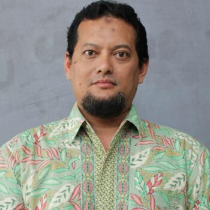

Staff
Tim pengajar dan asisten mata kuliah Sistem Basis Data Bioinformatika.
Tenaga Pengajar

Prof. Dr.Eng. Wisnu Ananta Kusuma, S.T., M.T.
Professor Bioinformatika Sistem
Asisten Praktikum

Gilland Fausta Putra Achyar, S.Mat., M.Kom.
Koordinator Asisten Praktikum

Said Thaufik Rizaldi, S.Kom., M.Kom.
Asisten Praktikum
Hakim Ilyas Azhar
Asisten Praktikum
Tsabitha Naylasafa Aurora
Asisten Praktikum